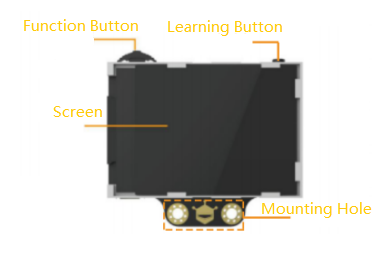
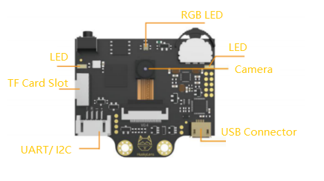
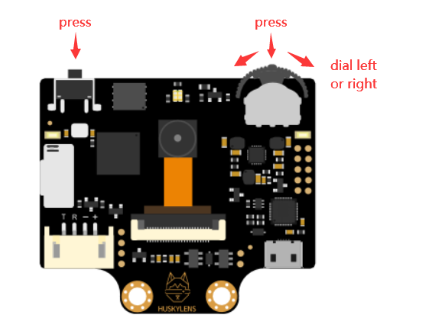

AI 카메라
허스키렌즈 ①
지금까지의 센서는 숫자 하나를 알려줬습니다. 밝기 얼마, 가스 얼마. 오늘 만날 센서는 다릅니다. "사람이 있다, 그 사람은 1번이다"처럼 무엇을 봤는지를 알려줍니다.
허스키렌즈 화면(위)과 피코가 받는 숫자(아래)를 비교해 보세요. 사진이 아니라 숫자 몇 개만 건너갑니다.
시작 전 확인
| 준비물 | 확인할 점 |
|---|---|
| 피코 + 그로브 쉴드 | 피코가 쉴드에 제대로 꽂혀 있는지 |
| 허스키렌즈 | 화면에 보호 필름이 있으면 떼도 됩니다 |
| 연결 케이블 | 그로브 쪽, 허스키렌즈 쪽 케이블 |
| LED 스틱 (또는 스트립) | 활동 6에서 씁니다 |
| USB 케이블 | 데이터 전송용. 피코에 꽂습니다 |
케이블을 꽂자마자 예전 코드(와이파이 서버 등)가 돌 수 있습니다. 셸이 바쁘면 빨간 정지(STOP)를 한 번 누르세요. 계속 거슬리면 보기 → 파일에서 main.py를 지우거나 이름을 바꿉니다.
허스키렌즈는 무엇이 다를까
허스키렌즈 안에는 이미지를 빠르게 계산하는 AI 칩이 들어 있습니다. 찍은 사진을 피코에게 넘기지 않고, 스스로 판단한 결과만 숫자로 보냅니다. "얼굴이 화면 이 위치에 있고, 1번으로 기억한 사람이다" 같은 것이요.
피코처럼 작은 컴퓨터는 사진을 직접 분석할 힘이 없습니다. 그래서 보는 일은 허스키렌즈가, 반응하는 일은 피코가 나눠 맡는 거예요.
생김새


| 부분 | 하는 일 |
|---|---|
| Camera 카메라 | 앞을 본다 |
| Screen 화면 | 카메라가 보는 장면과 무엇을 알아봤는지 보여준다 |
| Function Button 기능 버튼 | 돌리고 누르는 다이얼. 좌우로 돌리면 기능이나 설정 항목이 바뀌고, 누르면 선택된다 |
| Learning Button 학습 버튼 | 그냥 누르는 버튼. 지금 보이는 것을 학습시키거나 잊게 한다 |
| UART/I2C 4핀 단자 | 피코와 연결하는 곳. 단자 위에 T R − +가 적혀 있다 |
| USB Connector USB 단자 | 허스키렌즈 펌웨어 업데이트용. 오늘은 쓰지 않는다 (USB 케이블은 피코에 꽂는다) |
| LED · RGB LED | LED는 어두울 때 비추는 보조등, RGB LED는 지금 상태를 색으로 알려준다 |
| TF Card Slot | 마이크로 SD 카드를 꽂아 사진이나 학습 결과를 저장한다 (오늘은 쓰지 않는다) |
오늘 쓰는 버튼 두 개
오늘은 기능 버튼, 학습 버튼, 그리고 피코와 잇는 4핀 단자 위치만 알면 됩니다.

| 버튼 | 이렇게 쓴다 |
|---|---|
| 기능 버튼 (다이얼) | 좌우로 돌리기 → 기능이나 설정 항목으로 이동 누르기 → 선택 |
| 학습 버튼 | 누르기 → 지금 화면 가운데 보이는 것을 학습 |
할 수 있는 일 일곱 가지
기능 버튼을 돌리면 화면 위쪽 이름이 바뀝니다. 각각이 서로 다른 AI 기능이에요.
| 화면 이름 | 하는 일 | 언제 |
|---|---|---|
| Face Recognition | 얼굴을 찾고, 학습한 얼굴은 번호로 구분 | 오늘 |
| Object Tracking | 학습한 물체 하나를 따라간다 | |
| Object Recognition | 미리 배운 20가지 사물을 알아본다 | 다음 시간 |
| Line Tracking | 바닥에 그린 선의 방향을 알려준다 | |
| Color Recognition | 학습한 색 덩어리를 찾는다 | 다음 시간 |
| Tag Recognition | QR 코드 비슷한 태그를 읽는다 | |
| Object Classification | 내가 가르친 여러 물체를 구분한다 | 다음 시간 |
허스키렌즈는 버튼 한 번으로 학습합니다. 보여준 얼굴을 기억해 두었다가, 다음에 보면 "아까 그 사람"이라고 알아보는 거예요. 기계에게 예시를 보여주고 기억하게 하는 것, 이게 인공지능의 가장 기본적인 모습입니다.
활동 1. 연결하기
그로브 쉴드의 작은 스위치를 5V 쪽으로 밉니다. 허스키렌즈는 전기를 꽤 먹어서 5V가 안정적입니다.
그로브 케이블을 쉴드의 I2C1 포트에 꽂습니다. 바로 옆 I2C0이 아닙니다. 쉴드에 인쇄된 글자를 꼭 확인하세요.
허스키렌즈 케이블의 흰 커넥터를 허스키렌즈의 4핀 단자(T R − +)에 꽂습니다. 위 그림에서 카메라 쪽 왼쪽 아래에 있는 흰 단자예요.
그로브 쪽 선과 허스키렌즈 쪽 선을 아래처럼 잇습니다. 색이 서로 다른 짝이 있으니 주의하세요.
빨강끼리, 검정끼리 이어졌는지 한 번 더 보세요. 이 둘이 바뀌면 허스키렌즈가 고장 날 수 있습니다. 확인했으면 사진을 찍어 두세요. 잘 모르겠으면 사진을 채팅에 올리고 확인받은 뒤 전원을 넣습니다.
USB 케이블은 피코에 꽂고 노트북에 연결합니다. 허스키렌즈의 USB 단자에는 꽂지 않아요. 몇 초 뒤 허스키렌즈 화면도 함께 켜지고, 카메라가 보는 장면이 나오면 성공입니다.
이름은 달라도 하는 일이 같은 선끼리 잇는 겁니다. 그로브의 노랑(SCL)은 박자를 맞추는 선, 흰색(SDA)은 데이터가 오가는 선입니다. 허스키렌즈에서는 같은 일을 파랑(R)과 초록(T)이 맡고 있어요.
5차시에 그로브 케이블은 선이 한 묶음이라 꽂기만 하면 된다고 했죠. 그리고 그로브가 아닌 부품을 쓰게 되면 직접 맞춰야 한다고도 했습니다. 오늘이 바로 그날이에요.
활동 2. 코드 없이 얼굴 학습하기
허스키렌즈는 피코 없이도 혼자 알아봅니다. 코딩 전에 먼저 손에 익혀 두세요.
기능 버튼을 좌우로 돌려 화면 위쪽에 Face Recognition이 나오게 합니다.
카메라를 얼굴 쪽으로 향하게 하고 30cm~1m쯤 떨어지세요. 얼굴에 흰 상자와 Face라는 글자가 생깁니다. 찾기는 했지만 누구인지는 모르는 상태예요.
화면 가운데 + 표시를 얼굴에 맞추고 학습 버튼을 짧게 누릅니다. 상자가 파란색으로 바뀌고 Face: ID1이 뜨면 성공입니다.
학습 버튼을 길게 누른 채 고개를 조금씩 돌리면 여러 각도를 기억해서 더 잘 알아봅니다.
학습 버튼을 짧게 누르면 Click again to forget 같은 안내가 뜹니다. 숫자가 줄어드는 동안 한 번 더 누르면 기억이 지워집니다. 가만히 있으면 그대로 유지돼요.
흰 상자는 "얼굴은 있는데 누군지 모름", 파란 상자에 ID가 붙으면 "학습한 사람"입니다. 피코는 이 차이를 ID 숫자로 받습니다. 모르는 얼굴은 0, 학습한 얼굴은 1부터예요.
가족 얼굴을 학습시키고 싶으면 먼저 허락을 받으세요. 그리고 실습이 끝나면 잊게 해 두는 습관을 들이세요. 이 이야기는 12월 성찰 글쓰기에서 다시 다룹니다.
활동 3. 통신 방식을 I2C로 바꾸기
허스키렌즈는 여러 방식으로 대화할 수 있습니다. 우리는 I2C로 쓰니 그렇게 맞춰 둡니다.
기능 버튼을 돌려 화면 위쪽 이름이 General Settings가 되게 하고, 기능 버튼을 짧게 누릅니다.
기능 버튼을 돌려 Protocol Type을 고르고 누릅니다. 다시 돌려 I2C를 고르고 누릅니다.
기능 버튼을 돌려 Save & Return으로 가서 누릅니다. 저장할지 묻는 화면이 나오면 Yes를 고르고 누르세요.
Save & Return을 거치지 않고 빠져나오면 설정이 사라집니다. 다음 활동에서 연결이 안 되면 열에 아홉은 이 단계 때문이에요.
활동 4. 라이브러리 저장하고 연결 확인
라이브러리 파일 저장
허스키렌즈와 대화하려면 정해진 신호 규칙을 따라야 합니다. 그 규칙을 미리 묶어 둔 파일이 라이브러리예요. 우리는 함수 이름만 부르면 됩니다. 3차시에 from wifi_config import ...로 다른 파일을 불러왔던 것과 같은 방식입니다.
선생님이 올려 둔 huskylensPythonLibrary.py를 받아 토니에서 엽니다. 파일을 못 받았으면 아래 상자를 펼쳐 복사해도 됩니다.
파일 → 다른 이름으로 저장 → Raspberry Pi Pico → huskylensPythonLibrary.py. 대소문자까지 정확히 맞춰야 합니다. 내용은 고치지 마세요.
huskylensPythonLibrary.py 펼쳐 보기 (약 200줄)
# ════════════════════════════════════════════════════════════ # HuskyLens Python Library for Raspberry Pi Pico 2 W # (허스키렌즈 1세대 전용) # # ★ 이 파일은 고치지 말고 그대로 피코에 저장하세요. # 파일 이름 : huskylensPythonLibrary.py (대소문자 정확히) # # 📌 연결 (I2C 모드) # - 그로브 쉴드의 [I2C1] 포트에 연결 # - 그로브 쉴드 전원 스위치를 [5V]로 # - 허스키렌즈 설정에서 Protocol Type 을 [I2C]로 바꾸고 저장 # # 📌 핀 # - I2C1 : SDA = GP6, SCL = GP7 # - 통신 속도 50kHz (안정적으로 통신하기 위해 느리게) # # 📌 command_request_blocks() 가 돌려주는 값 # [[x, y, w, h, ID], [x, y, w, h, ID], ...] # x, y : 상자 가운데 위치 (화면 크기 320 x 240) # w, h : 상자의 너비와 높이 # ID : 학습한 번호 (학습 안 된 것은 0) # 아무것도 없으면 빈 리스트 [] # # 2026.10 수정 : 좌표 값이 255를 넘으면 잘못 계산되던 문제 수정 # Library credits: RRoy https://community.dfrobot.com/makelog-310469.html # ════════════════════════════════════════════════════════════ import ubinascii import time from machine import UART, I2C, Pin commandHeaderAndAddress = "55AA11" algorthimsByteID = { "ALGORITHM_OBJECT_TRACKING": "0100", "ALGORITHM_FACE_RECOGNITION": "0000", "ALGORITHM_OBJECT_RECOGNITION": "0200", "ALGORITHM_LINE_TRACKING": "0300", "ALGORITHM_COLOR_RECOGNITION": "0400", "ALGORITHM_TAG_RECOGNITION": "0500", "ALGORITHM_OBJECT_CLASSIFICATION": "0600" } COMMAND_REQUEST_CUSTOMNAMES = 0x2f COMMAND_REQUEST_TAKE_PHOTO_TO_SD_CARD = 0x30 COMMAND_REQUEST_SAVE_MODEL_TO_SD_CARD = 0x32 COMMAND_REQUEST_LOAD_MODEL_FROM_SD_CARD = 0x33 COMMAND_REQUEST_CUSTOM_TEXT = 0x34 COMMAND_REQUEST_CLEAR_TEXT = 0x35 COMMAND_REQUEST_LEARN_ONECE = 0x36 COMMAND_REQUEST_FORGET = 0x37 COMMAND_REQUEST_SCREENSHOT_TO_SD_CARD = 0x39 COMMAND_REQUEST_FIRMWARE_VERSION = 0x3C class HuskyLensLibrary: def __init__(self, proto): self.proto = proto self.address = 0x32 if self.proto == "SERIAL": # UART 모드: Pico UART0 # 파랑(허스키 TX) → GP1, 녹색(허스키 RX) → GP0 self.huskylensSer = UART(0, baudrate=9600, tx=Pin(0), rx=Pin(1), timeout=1000) time.sleep(0.1) while self.huskylensSer.any(): self.huskylensSer.read() else: # I2C 모드: 그로브 쉴드 I2C1 포트 (SDA=GP6, SCL=GP7), 50kHz self.huskylensSer = I2C(1, scl=Pin(7), sda=Pin(6), freq=50000) self.lastCmdSent = "" def writeToHuskyLens(self, cmd): self.lastCmdSent = cmd if self.proto == "SERIAL": self.huskylensSer.write(cmd) else: self.huskylensSer.writeto(self.address, cmd) def calculateChecksum(self, hexStr): total = 0 for i in range(0, len(hexStr), 2): total += int(hexStr[i:i + 2], 16) hexStr = hex(total)[-2:] return hexStr def cmdToBytes(self, cmd): return ubinascii.unhexlify(cmd) def splitCommandToParts(self, str): headers = str[0:4] address = str[4:6] data_length = int(str[6:8], 16) command = str[8:10] if data_length > 0: data = str[10:10 + data_length * 2] else: data = [] checkSum = str[2 * (6 + data_length - 1):2 * (6 + data_length - 1) + 2] return [headers, address, data_length, command, data, checkSum] def getBlockOrArrowCommand(self): if self.proto == "SERIAL": byteString = self.huskylensSer.read(5) byteString += self.huskylensSer.read(int(byteString[3])) byteString += self.huskylensSer.read(1) else: byteString = self.huskylensSer.readfrom(self.address, 5) byteString += self.huskylensSer.readfrom(self.address, byteString[3] + 1) commandSplit = self.splitCommandToParts(''.join(['%02x' % b for b in byteString])) return commandSplit[4] def processReturnData(self): try: if self.proto == "SERIAL": byteString = self.huskylensSer.read(5) if byteString is None or len(byteString) < 5: print("Read error (응답 없음 - 배선/모드 확인 필요)") return [] byteString += self.huskylensSer.read(int(byteString[3])) byteString += self.huskylensSer.read(1) else: byteString = self.huskylensSer.readfrom(self.address, 5) byteString += self.huskylensSer.readfrom(self.address, byteString[3] + 1) commandSplit = self.splitCommandToParts(''.join(['%02x' % b for b in byteString])) if commandSplit[3] == "2e": return "Knock Recieved" else: returnData = [] numberOfBlocksOrArrow = int( commandSplit[4][2:4] + commandSplit[4][0:2], 16) numberOfIDLearned = int( commandSplit[4][6:8] + commandSplit[4][4:6], 16) frameNumber = int( commandSplit[4][10:12] + commandSplit[4][8:10], 16) for i in range(numberOfBlocksOrArrow): returnData.append(self.getBlockOrArrowCommand()) finalData = [] tmp = [] for i in returnData: tmp = [] for q in range(0, len(i), 4): # 2바이트 값 = 아래 바이트 + 위 바이트 x 256 # (2026.10 수정: 예전에는 x 256 이 빠져 있어 # x 좌표가 255를 넘으면 엉뚱한 값이 나왔음) low = int(i[q:q + 2], 16) high = int(i[q + 2:q + 4], 16) tmp.append(low + high * 256) finalData.append(tmp) tmp = [] return finalData except Exception as e: print("Read error:", e) return [] def command_request_knock(self): cmd = self.cmdToBytes(commandHeaderAndAddress + "002c3c") self.writeToHuskyLens(cmd) return self.processReturnData() def command_request_blocks(self): cmd = self.cmdToBytes(commandHeaderAndAddress + "002131") self.writeToHuskyLens(cmd) return self.processReturnData() def command_request_arrows(self): cmd = self.cmdToBytes(commandHeaderAndAddress + "002232") self.writeToHuskyLens(cmd) return self.processReturnData() def color_recognition_mode(self): cmd = self.cmdToBytes(commandHeaderAndAddress + "022d040043") self.writeToHuskyLens(cmd) return self.processReturnData() def face_recognition_mode(self): cmd = self.cmdToBytes(commandHeaderAndAddress + "022d00003f") self.writeToHuskyLens(cmd) return self.processReturnData() def object_tracking_mode(self): cmd = self.cmdToBytes(commandHeaderAndAddress + "022d010040") self.writeToHuskyLens(cmd) return self.processReturnData() def object_recognition_mode(self): cmd = self.cmdToBytes(commandHeaderAndAddress + "022d020041") self.writeToHuskyLens(cmd) return self.processReturnData() def tag_recognition_mode(self): cmd = self.cmdToBytes(commandHeaderAndAddress + "022d050044") self.writeToHuskyLens(cmd) return self.processReturnData() def command_request_algorthim(self, alg): if alg in algorthimsByteID: cmd = commandHeaderAndAddress + "022d" + algorthimsByteID[alg] cmd += self.calculateChecksum(cmd) cmd = self.cmdToBytes(cmd) self.writeToHuskyLens(cmd) return self.processReturnData() else: print("INCORRECT ALGORITHIM NAME") def command_request_learn_once(self, id): cmd = commandHeaderAndAddress dataLength = 2 cmd += "{:02x}".format(dataLength) cmd += "{:02x}".format(COMMAND_REQUEST_LEARN_ONECE) id = [id & 0xff, (id >> 8) & 0xff] cmd += "{:02x}".format(id[0]) cmd += "{:02x}".format(id[1]) cmd += self.calculateChecksum(cmd) cmd = self.cmdToBytes(cmd) self.writeToHuskyLens(cmd) return self.processReturnData() def command_request_forget(self): cmd = commandHeaderAndAddress dataLength = 0 cmd += "{:02x}".format(dataLength) cmd += "{:02x}".format(COMMAND_REQUEST_FORGET) cmd += self.calculateChecksum(cmd) cmd = self.cmdToBytes(cmd) self.writeToHuskyLens(cmd) return self.processReturnData()
연결 확인
새 파일에 아래 코드를 붙여넣고 실행하세요. 피코가 I2C 선에 연결된 장치를 모두 찾아 줍니다.
from machine import I2C, Pin i2c = I2C(1, scl=Pin(7), sda=Pin(6), freq=50000) # I2C1 포트 found = i2c.scan() # 연결된 I2C 장치 주소 목록 print("찾은 장치:", found) if 50 in found: # 허스키렌즈 주소는 50 (= 0x32) print("허스키렌즈 발견! 다음 단계로 가세요.") else: print("허스키렌즈가 안 보입니다. '막힐 때 보는 곳'을 확인하세요.")
[50]이 보이면 성공입니다. 50은 허스키렌즈의 I2C 주소예요. 아파트 호수처럼, 같은 선에 여러 장치가 달려도 이 번호로 구분합니다.
피코가 아무것도 못 찾은 겁니다. 아래 막힐 때 보는 곳의 첫 줄부터 순서대로 확인하세요. 대부분 선 색, 포트 위치, 5V 스위치 중 하나입니다.
활동 5. 피코가 받는 숫자 보기
from huskylensPythonLibrary import HuskyLensLibrary import time husky = HuskyLensLibrary("I2C") time.sleep(0.5) print(husky.command_request_knock()) # "Knock Recieved" 가 나오면 대화 성공 husky.face_recognition_mode() # 얼굴 인식 모드로 바꾸기 time.sleep(0.5) while True: result = husky.command_request_blocks() # [[x, y, w, h, ID], ...] 아무것도 없으면 [] print(result) time.sleep(0.5)
실행하면 처음에 Knock Recieved가 나옵니다. 피코가 "거기 있니?" 하고 두드렸고 허스키렌즈가 대답했다는 뜻이에요. 철자가 틀린 것처럼 보이는데, 라이브러리에 그렇게 적혀 있어서 그대로 나옵니다.
그다음 0.5초마다 이런 줄이 찍힙니다.
[] [[158, 112, 84, 96, 1]]
| 자리 | 이름 | 뜻 |
|---|---|---|
| 첫 번째 | x | 상자 가운데의 가로 위치 (0 ~ 320) |
| 두 번째 | y | 상자 가운데의 세로 위치 (0 ~ 240) |
| 세 번째 | w | 상자 너비 |
| 네 번째 | h | 상자 높이 |
| 다섯 번째 | ID | 학습한 번호. 모르는 얼굴은 0 |
얼굴이 하나면 [[...]], 둘이면 [[...], [...]]처럼 상자가 리스트로 쌓입니다. 아무도 없으면 빈 리스트 []예요.
직접 확인해 보기
- 얼굴을 왼쪽·오른쪽으로 움직이면 어느 숫자가 바뀌나요?
- 가까이 다가가면 어느 숫자가 커지나요?
- 학습하지 않은 사람(또는 사진)이 비치면 마지막 숫자는?
- 두 사람이 같이 비치면 줄이 어떻게 바뀌나요?
MQ2는 0~65535 사이 숫자 하나를 보냈고, 그 숫자가 무슨 뜻인지는 우리가 정했습니다. 허스키렌즈는 이미 판단한 결과를 보냅니다. "여기에 얼굴, 1번 사람." 그 판단이 틀릴 수도 있다는 점은 활동 7에서 확인합니다.
활동 6. 스마트 도어락 만들기
등록된 얼굴이면 초록, 모르는 얼굴이면 빨강을 켭니다. LED 스틱을 D16에 꽂으세요. 허스키렌즈는 I2C1에 그대로 둡니다.
from huskylensPythonLibrary import HuskyLensLibrary from machine import Pin from neopixel import NeoPixel import time TIMING = (280, 515, 515, 745) # WS2813 전용 타이밍 LED_COUNT = 10 # ★ 스틱 10, 스트립 60 led = NeoPixel(Pin(16), LED_COUNT, timing=TIMING) board_led = Pin("LED", Pin.OUT) # 피코 내장 LED def fill(color): """LED 전체를 한 가지 색으로""" for i in range(LED_COUNT): led[i] = color led.write() husky = HuskyLensLibrary("I2C") time.sleep(0.5) husky.face_recognition_mode() time.sleep(0.5) print("스마트 도어락 시작! 카메라를 봐 주세요.") while True: result = husky.command_request_blocks() if result: x, y, w, h, face_id = result[0] # 첫 번째 얼굴만 본다 if face_id > 0: print("문 열림 - ID", face_id, "님 확인") fill((0, 60, 0)) # 초록 board_led.on() else: print("등록되지 않은 얼굴입니다") fill((60, 0, 0)) # 빨강 board_led.off() else: print("얼굴 없음") fill((0, 0, 0)) board_led.off() time.sleep(0.2)
코드 읽기
if result:— 리스트가 비어 있지 않으면, 즉 얼굴이 하나라도 보이면x, y, w, h, face_id = result[0]— 첫 번째 상자의 다섯 숫자를 다섯 이름에 나눠 담기if face_id > 0:— ID가 1 이상, 즉 학습한 얼굴이면
더 해 보기
- 문이 열리면 3초 동안 초록을 유지했다가 꺼지게 하기
- 모르는 얼굴이 계속 보이면 빨강으로 깜빡이며 경고하기
- ID 1은 초록, ID 2는 파랑처럼 사람마다 다른 색 (여러 얼굴 학습은 다음 시간에 배웁니다)
AI에게 부탁해도 좋습니다. 단 LED 이야기를 할 때는 6차시에 배운 TIMING 문장을 꼭 붙이세요.
활동 7. 허스키렌즈가 할 수 없는 일
도어락이 잘 되나요? 그럼 이제 속여 봅니다. 도어락 코드를 돌려 둔 채로 아래를 실험하고, 결과를 기록하세요.
| 실험 | 예상 | 결과 |
|---|---|---|
| 방 불을 끄고 어둡게 | ||
| 고개를 옆으로 돌리기 | ||
| 2m 이상 멀리 떨어지기 | ||
| 모자·마스크·안경 쓰기 | ||
| 휴대폰에 띄운 내 얼굴 사진 보여주기 | ||
| 학습한 사람과 닮은 가족 |
허스키렌즈는 화면 속 얼굴 모양을 비교할 뿐, 그게 살아 있는 사람인지는 확인하지 않습니다. 실제 휴대폰 얼굴 인식은 깊이를 재는 센서나 적외선으로 진짜 얼굴인지 따로 확인해요.
그래서 허스키렌즈로 만든 도어락을 진짜 현관에 달면 안 됩니다. 이렇게 "이 센서로는 이건 안 된다"를 실험으로 확인하고 말할 수 있는 것이 수행평가의 센서 이해 항목입니다.
이 실험은 다음 시간 처음에 이어서 해도 됩니다. 대신 결과는 꼭 기록하세요. 프로젝트 발표 때 그대로 쓰입니다.
막힐 때 보는 곳
| 이런 상황이면 | 이렇게 해 보세요 |
|---|---|
| 허스키렌즈 화면이 안 켜짐 | ① 빨강·검정 연결 ② 쉴드 스위치가 5V인지 ③ USB 다시 꽂기 |
| 화면이 켜졌다 꺼졌다 함 | 전기가 부족합니다. 노트북의 다른 USB 포트로 옮기거나 노트북 충전기를 꽂으세요 |
| i2c.scan() 결과가 [] | ① 노랑-파랑, 흰-초록 짝이 맞는지 ② I2C1 포트인지 (I2C0 아님) ③ 허스키렌즈 화면이 켜진 뒤에 실행했는지 |
| scan은 [50]인데 Read error | 활동 3 설정을 다시 확인. Protocol Type이 I2C이고 Save & Return으로 저장했는지 |
| OSError: [Errno 5] | 선이 헐겁습니다. 이음새를 꾹 눌러 다시 꽂으세요 |
| ImportError: huskylensPythonLibrary | 파일 이름 대소문자, 그리고 피코에 저장했는지 (이 컴퓨터 아님) |
| 얼굴이 있는데 계속 [] | 30cm~1m 거리, 밝은 곳에서. 허스키렌즈 화면에 상자가 보이는지 먼저 확인 |
| 학습했는데 ID가 0 | 학습 버튼을 길게 눌러 여러 각도로 다시 학습. 학습할 때와 조명이 많이 다르면 못 알아봅니다 |
| LED가 안 켜짐 | timing=TIMING, led.write(), D16 포트 확인 (5·6차시와 같음) |
오늘의 기록
띵커벨에 아래 내용을 기록해주세요.
## 8차시 — AI 카메라 허스키렌즈 ① ## i2c.scan() 결과 [ ] ## 피코가 받은 값 한 줄 (복사해서 붙여넣기) ## 얼굴을 움직이거나 가까이 갔을 때 바뀐 숫자 ## 할 수 없는 일 실험 결과 (특히 사진으로 속였을 때) ## 막혔던 것과 해결한 방법 ## 허스키렌즈로 만들어 보고 싶은 것
점검하기
허스키렌즈는 피코에게 사진을 보내나요?
[[250, 100, 60, 70, 0]]은 무슨 뜻인가요?
허스키렌즈를 연결할 때 꼭 맞춰야 하는 세 가지는?
i2c.scan()에서 나온 50은 무엇인가요?
허스키렌즈 도어락을 실제 현관에 쓰면 안 되는 이유는?
오늘 한 일
다음 시간 예고
오늘은 누구인지(ID)를 썼습니다. 다음 시간에는 어디에 있는지(x), 무슨 색인지, 무엇인지까지 씁니다. 얼굴을 따라 움직이는 불빛도 만들어요.
그리고 허스키렌즈로 어떤 프로젝트를 할 수 있을지 정해 봅니다. 오늘 실험에서 "이건 안 되네" 싶었던 걸 기억해 두세요.